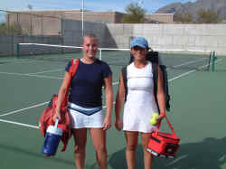
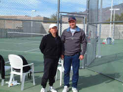
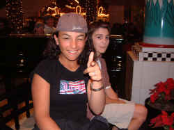
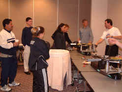

|

It was a beautiful day at the Copper Bowl. Liz played her
second round match at the Foothills High School. Twelve great
courts in the middle of the desert. Pictured above with
opponent Randi Schuler of Davis, California after her
beautifully fought three set victory for Liz, 6-4, 4-6,
6-4. Sportsmanship was at its highest level; no line calls
were questioned by either player despite the closeness of the
match. Both girls hit hard and painted the lines. Liz was able
to hit one more back in the end. Dad Fred Schuler was so
nervous he could not remember how old his daughter was and
missed it by almost a year. When we checked on the computer,
we saw a different birth date and had a laugh the next day
with the Schulers.
 |
|
Dorothy
and Fred exchange friendlies before the match. |
|
|
With Lizzie's match finishing at around 2 PM, we had a rather
late lunch at a restaurant called Wildflowers. It was the
second lunch we did there and it was pleasant again. Big
salads and big smiles.

|
| Liz
with AJ Nelson at the magic show. |
Liz had a very light dinner before heading for the Tucson Mall
player party sponsored by the Copper Bowl. Kids met up at the
food court and were supposed to shop together. We think the
tournament director has found a way to make money off every
aspect of this event. The mall had a magic show and we hung
around with the Nelsons from Ohio and watched a bit. Liz had
fun trying on the youngest Nelson's hat. No shopping from the
Kobaks, yassuh, yassuh.

|
|
The
stringing room at El Conquistador |
There was one last
stop before sneaking under the sheets for the night. Liz had a
pair of racquets restrung at the El Conquistador. Pictured
above with Liz and Dorothy are Domingo Jordan and the number
one seed daughter Ale. Craig Bothman, a principal in Pro
Circuit Stringing is at the stringing machine. The Pro
Circuits guy deliver consistently every time. Each trip to the
stringing room has been a pleasure with light banter
accompanying the pulling of the strings. |